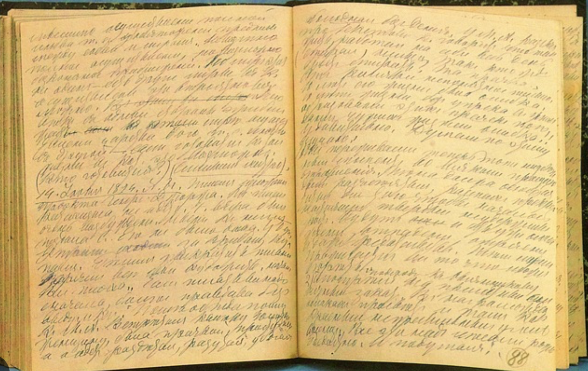

Дневник

—
в общей сложности 4700 рукописных листов (для сравнения: рукописный
фонд романа «Война и мир» — 5202 листа).
Когда Толстой при его увлекающейся натуре был поглощён работой над каким-то произведением
или занят общественным делом, писание дневника прерывалось на несколько месяцев или даже лет.
Так было в пору создания «Войны и мира» и «Анны Карениной». Для различного рода коротких
записей с 1855 г. у Толстого были заведены
записные книжки.
Дневнику Толстого предшествуют автобиографические записи дневникового характера. С 27 января по март 1847 г. он вёл особый журнал
Толстой начинал вести дневник для наблюдения за развитием своих способностей, избавлением от слабостей, нравственным самосовершенствованием: «Я никогда не имел дневника, потому что не видал никакой пользы от него. Теперь же, когда я занимаюсь развитием своих способностей, по дневнику я буду в состоянии судить о ходе этого развития» (запись 7 апреля 1847 г.). Первый дневник Толстого, главная цель которого — воспитание и самообразование, оборвался на записи 16 июня 1847 г.
Только через 3 года, 14 июня 1850 г., в Ясной Поляне Толстой вернулся к ведению дневника.
В течение нескольких лет, уже став писателем, Толстой упорно и последовательно, как говорит дневник, занят определением своих многочисленных слабостей. Перечитывая свои записи, он подытоживает пережитое, и тогда появляются жёсткие самокритичные оценки: «Что я такое? Один из четырёх сыновей отставного подполковника, оставшийся с 7-летнего возраста без родителей под опекой женщин и посторонних, не получивший ни светского, ни учёного образования и вышедший на волю 17-ти лет, без большого состояния, без всяко-го общественного положения и, главное, без правил; человек, расстроивший свои дела до последней крайности, без цели и наслаждения проведший лучшие года своей жизни, наконец изгнавший себя на Кавказ, чтоб бежать от долгов и, главное, привычек, а оттуда, придравшись к каким-то связям, существовавшим между его отцом и командующим армией, перешедший в Дунайскую армию 26 лет, прапорщиком, почти без средств, кроме жалованья (потому что те средства, которые у него есть, он должен употребить на уплату оставшихся долгов), без покровителей, без уменья жить в свете, без знания службы, без практических способностей; но — с огромным самолюбием! Да, вот моё общественное положение. Посмотрим, что такое моя личность.
Значительное место в дневнике начинают занимать «мысли, сведения или примечания, относящиеся до предполагаемых работ» (запись 2 января 1854 г.). Вступив на литературное поприще, Толстой уже сознательно превращал дневник в рабочую тетрадь, где накапливался и хранился материал для будущих сочинений.
Содержание дневника Толстого с каждым годом становится всё более разнообразным. Помимо записей о собственной жизни, появляется много интересных наблюдений над окружающим миром, людьми, много раздумий на общественно-политические, философские, этические, эстетические темы. В центре дневника — сам автор, его мысли и чувства, суровый самоанализ, воспоминания о прошлом и планы на будущее. Внешний мир интересует писателя пока главным образом постольку, поскольку он затрагивает его личность. В дневнике много глубоких мыслей о народе, «русском рабстве», о Крымской войне, о судьбе Севастополя и России — эти размышления ещё очень тесно связаны с интересами самого Толстого. Писатель пробует различные виды деятельности: общественной, в качестве мирового посредника после отмены крепостного права; педагогической, открыв в Ясной Поляне школу для крестьянских ребятишек. Расширяется круг его общения, он знакомится с видными русскими литераторами, — всё это отражалось на страницах его дневника.
Дневники августа-сентября 1862 г. наполнены «сладким чувством и полнотой любовной жизни». В то время Толстой переживал самое сильное любовное увлечение — в конце сентября С. А. Берс стала его женой.
«Признаками стремления на чистый воздух» называл Толстой дневники своих молодых (до женитьбы) лет. «Из них видно, по крайней мере, то, что, несмотря на всю пошлость и дрянность моей молодости, я всё-таки не был оставлен Богом и хоть под старость стал хоть немного понимать и любить Его», — писал Толстой 27 марта 1895 г.
В позднейшие годы, особенно после религиозного кризиса на рубеже 1880-х гг., центр тяжести в дневнике переносится на рассмотрение всей совокупности жизненных проявлений (в том числе собственной деятельности) с этических позиций, существенных проблем бытия, кардинальных поворотов истории.
Особенно значительны по содержанию дневники Толстого последних десятилетий его жизни, когда каждая запись начинается перечислением событий внешней и внутренней жизни автора, описанием его встреч с людьми, его чтения, большей частью с отзывами о прочитанном, и тех работ, которыми он был занят. По дневникам можно проследить творческую историю большинства сочинений Толстого, от их зарождения до последней редакции или чтения корректур, а также его колебания в оценке своих произведений — от чувства удовлетворения написанным до самых резких отрицательных суждений. Записывал Толстой и свои осуществлённые или неосуществлённые замыслы, заносил в дневник отклики на события общественно-политической жизни.
Почти за каждой дневниковой записью следуют записи отвлечённых мыслей по самым разным вопросам: литературным, религиозным, философским, общественно-политическим, эстетическим, педагогическим и др. Эти мысли Толстой первоначально заносил в свои записные книжки, причём в последние годы жизни у него обычно существовали 2 записные книжки: «дневная» и «ночная». «Дневная» записная книжка всегда находилась в кармане его блузы, «ночная» лежала у него на ночном столике. В «ночную» книжку Толстой, зажигая свечу, вписывал мысли, приходившие ему ночью в состоянии бессонницы или при пробуждении. По мере накопления мыслей в записных книжках Толстой выписывал их в дневник, обрабатывая и уточняя, после чего отрывочные записи в записных книжках вырастали в сильные художественно выраженные афоризмы или в обширные логически последовательные рассуждения. Лишь немногие из записанных Толстым в дневниках мыслей по различным вопросам были развиты им в отдельных статьях. Поэтому писатель особенно дорожил своими дневниками последних лет и готов был ценить их даже выше всего остального им написанного. За несколько лет до смерти он так говорил о своих дневниках: «Думал о том, что пишу я в дневнике не для себя, а для людей, — преимущественно для тех, которые будут жить, когда меня, телесно, не будет, и что в этом нет ничего дурного. Это то, что, мне думается, от меня требуется. Ну, а если сгорят эти дневники? Ну что ж? Они нужны, может быть, для других, а для меня, наверное, — не то что нужны, а они — это я». Толстой надеялся, что издание его записей, «если выпустить из них всё случайное, неясное и излишнее», может быть полезно людям для их нравственного совершенствования и уяснения главных жизненных вопросов.